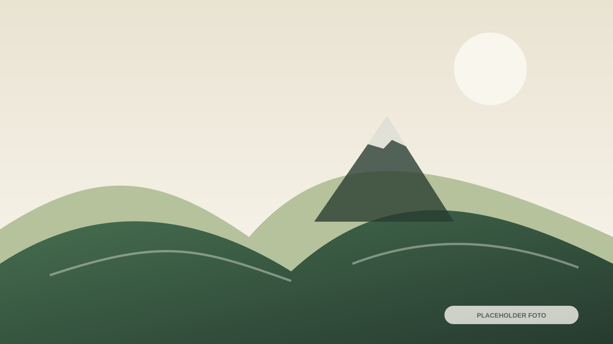
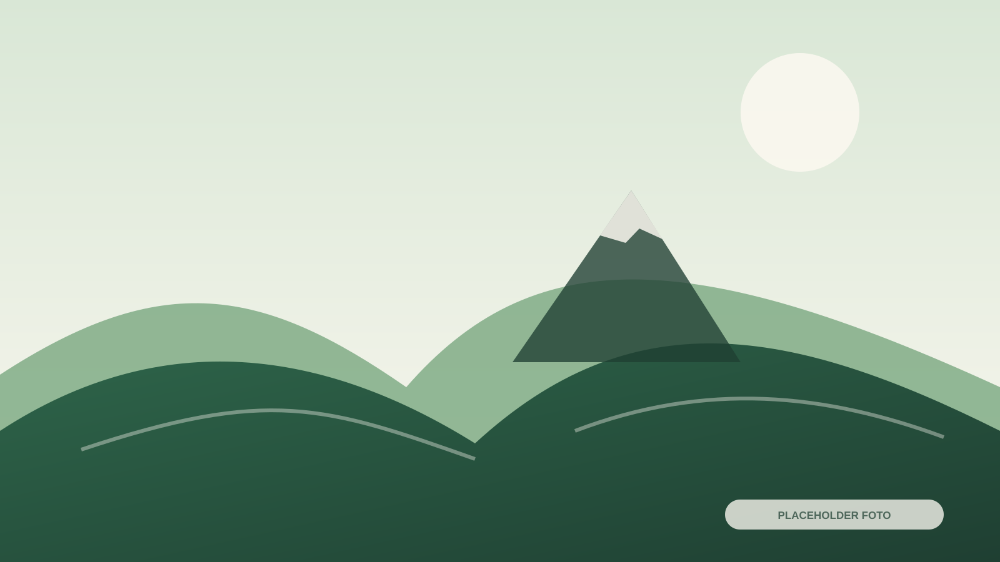

Lokasi Basecamp
Patakbanteng, Kecamatan Kejajar, Kabupaten Wonosobo.

Pusat informasi pendakian yang merangkum lokasi basecamp, jalur, persiapan, SOP keselamatan, layanan pendukung, dan kontak penting.
Kolom berikut sengaja menggunakan placeholder agar tidak ada informasi pendakian yang dikarang.
Patakbanteng, Kecamatan Kejajar, Kabupaten Wonosobo.
Jam registrasi dan pelayanan tiket belum diisi.
Harga terbaru belum tersedia dalam brief.
Estimasi waktu dan data ketinggian akan diisi dari sumber resmi.
Harga tiket, jam operasional, waktu terbaik, estimasi pendakian, dan ketinggian harus dikonfirmasi kepada pengelola resmi.

Bagian final akan memuat daftar pos, estimasi waktu antarpos, kondisi jalur, tingkat kesulitan, titik istirahat, dan area yang membutuhkan kewaspadaan.
| Bagian Jalur | Estimasi | Kondisi |
|---|---|---|
| Basecamp – Pos 1 | BELUM DIISI | BELUM DIISI |
| Pos berikutnya | BELUM DIISI | BELUM DIISI |
Daftar persyaratan resmi akan ditambahkan setelah dikonfirmasi oleh pengelola basecamp.
Daftar perlengkapan wajib dan perlengkapan yang disarankan belum tersedia pada brief.
Periksa kondisi fisik, informasi cuaca, dan arahan petugas sebelum keberangkatan.

Ketentuan rinci harus mengikuti SOP resmi yang berlaku saat kunjungan.
Peraturan resmi, larangan, dan batasan kegiatan akan ditempatkan di sini.
Prosedur dan kontak darurat harus dikonfirmasi kepada pengelola.
Pendaki wajib mematuhi ketentuan pengelolaan sampah dan menjaga ekosistem.
Jenis layanan, ketentuan, kisaran harga, dan kontak koordinator.
Lihat DetailTransportasi lokal, rute, titik jemput, dan kontak.
Lihat DetailPilihan tempat singgah sebelum atau sesudah pendakian.
Lihat DetailPeralatan camping serta paket dokumentasi pendakian.
Lihat DetailGunakan direktori kontak untuk menghubungi Basecamp Patakbanteng, ranger, layanan kesehatan, atau keamanan.